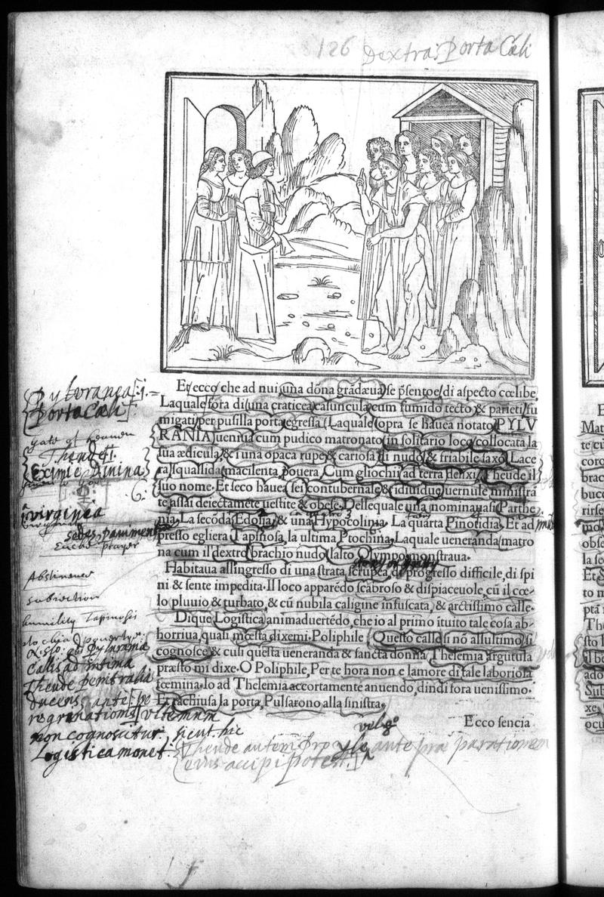

← All Folios
Signature h7v
Folio 63v, Quire h

British Library, London — C.60.o.12
Vision Reading (Phase 3 deep analysis)
Primary hand: Multiple (at least 3) · Hands: 3 · Type: woodcut_page · Sig: h7v
Woodcut: Group of figures before a classical portico/temple entrance
Poliphilo and Polia before a group of female figures at a doorway. Classical architecture with pediment. Trees and landscape to the left. Figures in flowing classical garments, one gesturing toward the entrance. This follows the three-doors choice — Poliphilo has chosen the door of EROTOTROPHOS.
Condition: Good. Some hand-coloring visible
Transcription Attempts
top · Latin · HIGH
126 dextra porta Cel.
Page number + annotation: 'dextra porta Cel.' = 'the right door Cel[estial]' or 'the right door of Cel[sius/estis]'. This is a reader's navigational annotation identifying which door scene is depicted
left_margin_top · Italian/Latin · MEDIUM
palorachia [...] Boccachio [...]
Possible reference to Boccaccio. If correct, this reader is cross-referencing the HP with Boccaccio's works — a significant literary-historical connection
left_margin_center · Latin · MEDIUM
Divinij [...] Theologia [...] Eximie Anima [...] Morigera [...] Varieta [...] perenni [...] benevolo [...]
Theological vocabulary: 'Divini', 'Theologia', 'Eximie Anima' (excellent soul), 'Morigera' (compliant/obedient), 'Varieta' (variety), 'perenni' (perennial). This looks like a reader's allegorical key interpreting the scene in theological terms
left_margin_lower · Latin with possible English · LOW
manly Topica [...] bonitate [...] gratiosus [...]
'Topica' may reference Aristotle's Topics. 'manly' appears to be English. Multiple hands working in this margin
bottom · Latin · LOW
Ecce facia [...] rituale autorum proph[...] ante [...] passio[nem] [...] modo [...] cognoscen [...] sit A[...] M[...]
'Ecce' (behold), 'rituale' (ritual), 'autorum' (of authors), 'prophetae' (prophets?), 'passionem' (passion/suffering). This is dense theological-alchemical commentary. 'Passionem' could refer to Christ's passion or to alchemical suffering/transformation
Scholarly Significance
This page shows at least three distinct interpretive programs colliding: (1) navigational glosses identifying the door choice, (2) theological allegoresis reading the scene as about divine glory and the soul, (3) possible cross-references to Boccaccio and Aristotle's Topics. The coexistence of these reading strategies on a single page demonstrates the HP's function as a polyvalent allegorical text that invited multiple hermeneutic traditions.
Cross-references: Photo 138 (three doors p.125), Photo 140 (Synostra Gloria mundi), Russell Ch. 7, Boccaccio (if confirmed)
Note (possible_new_reference): Possible Boccaccio reference in left margin not documented by Russell. Needs verification.
Vision reading (Claude Code, Phase 3)